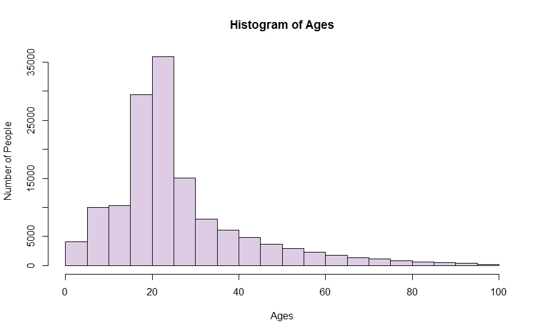
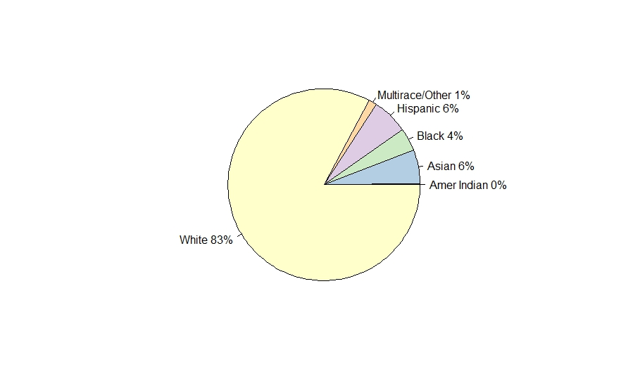
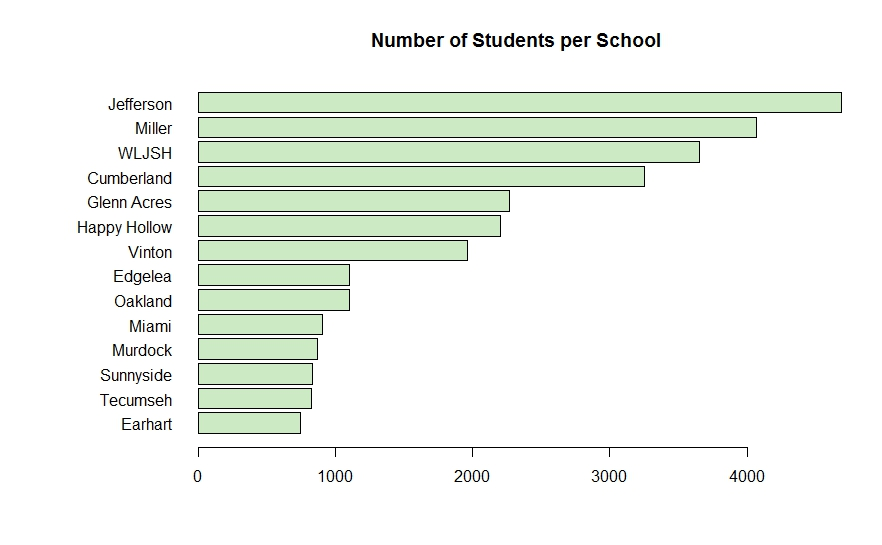
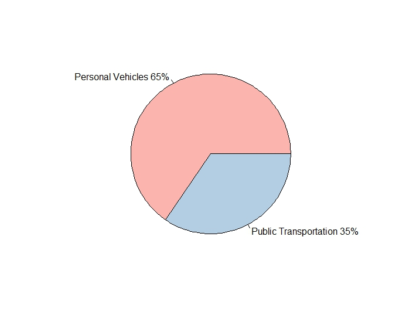
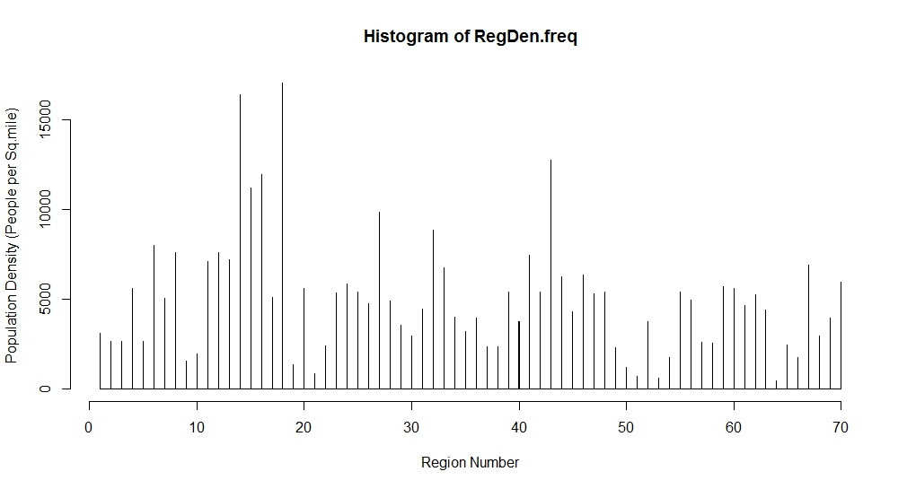

Use the following selections to gain more information about the data utilized in the simulation model.
connect_error) { die("Connection failed: " . $conn->connect_error); } $sql = "SELECT Region_Num FROM Region"; $result = $conn->query($sql); ?>Age and Race Distributions
 School Populations and Public Transportation Utilization
 Population Density per Region
